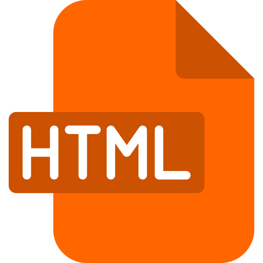
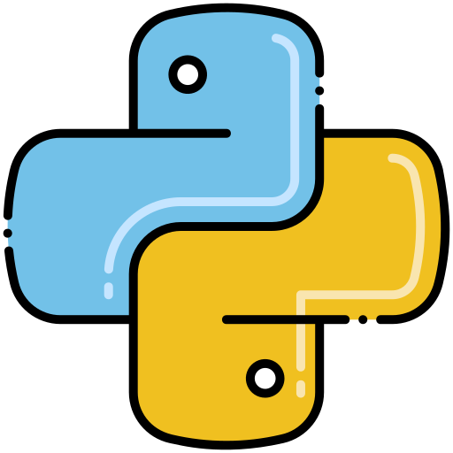
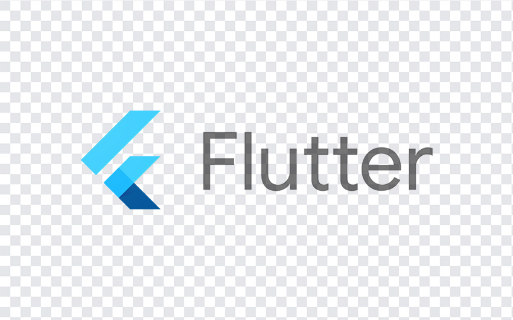

Focus
Web apps, computer vision, real-time systems, and clean interfaces.
019-400-8613
janicekho80@gmail.com
https://github.com/Janicekho2004



About
Hi, I'm Janice Kho Ting Wei, a Software Engineering graduate from Curtin University Malaysia with a strong interest in web application development, real-time systems, computer vision, and user-friendly interface design.
Through my internships, I gained practical experience developing and testing systems involving vehicle-component detection, live video and audio streaming, restaurant management, API integration, database operations, and interface design.
I am an organised, responsible, and detail-oriented person who enjoys learning new technologies and turning ideas into practical software solutions.
Web apps, computer vision, real-time systems, and clean interfaces.
Responsible, organised, detail-oriented, and eager to keep improving.
To create practical software that is clear, useful, and easy to use.
Experience
Software Development Intern
Nov 2025 - Feb 2026
Developed and tested a web-based vehicle inspection system with live video and audio streaming, vehicle-part detection, Malay speech transcription, and automated checklist matching.
Supported computer vision testing involving head and wrist detection using Jetson Nano.
Assisted with RTSP video streaming and Orbbec point-cloud streaming prototypes.
Supported facial landmark detection experiments using ONNX and MediaPipe.
Frontend Developer Intern
Nov 2024 - Feb 2025
Developed frontend features such as table management, split billing, daily register, and closing functions.
Designed user interface screens in Figma with attention to layout, user flow, and visual consistency.
Projects
Here are some of the selected projects I have developed during my studies. These projects allowed me to practice software development, user interface design, database integration, real-time communication, computer vision, testing, and project management.
Capstone Project
Developed a web-based, location-based mixed-reality escape room system where players follow clues, scan objects, unlock digital content, answer questions, earn points, and track their progress.
Personal Project
Built a 2D space-shooting game featuring player movement, shooting, enemies, collision detection, and a scoring system. The project was also presented during a Python programming workshop.
User Interface Design
Designed a CBT-based mental health mobile app with role-specific user flows, wireframes, high-fidelity prototypes, and user testing improvements.